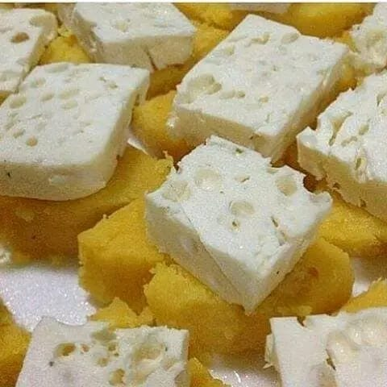
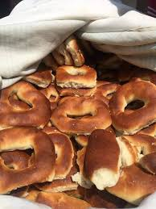
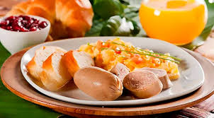
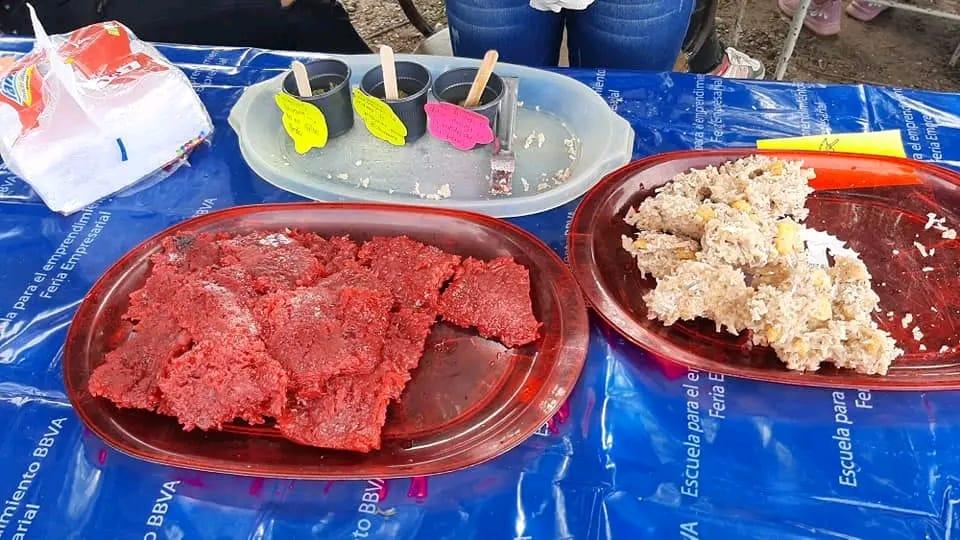
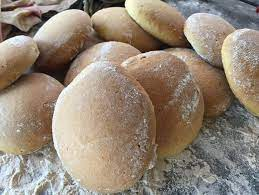

Bollos de mazorca

Almojabas
Almojabanas
La almojábana está hecha de maíz, queso, azúcar, soda y, posteriormente se lleva a un horno de barro

Butifarra
Butifarra
La butifarra (del catalán botifarra) es un embutido fresco compuesto de carne picada de cerdo condimentada con sal, pimienta y, a veces, otras especias.

Cocadas
Cocadas
Las cocadas es un postre típico de Colombia, aunque es representativo de la gastronomía de las regiones costeras ( principalmente región insular). Su ingrediente principal es el coco rallado, acompañado de panela, canela y clavo de olor.

Galletas de limon
Galletas de limon
En la provincia de nuestra costa caribe existen dos tipos de galletas que han sido hechas de manera artesanal en las hornillas de los patios.